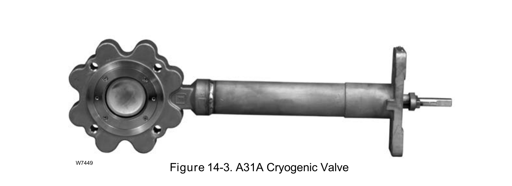

A Different Process, Same Material Constraint

A cryogenic valve selected for this service carries forward the same material-selection judgment already applied to liquefaction — confirming the fundamental transfers across two different LNG processes, not just within one.
Fisher Control Valve Sourcebook — Oil & Gas (© 2013 Fisher), Chapter 14 "LNG Receiving Terminals," Figure 14-3 (drawing number W7449, printed p. 14-4) — "Figure 14-3. A31A Cryogenic Valve." — used directly. Component Index: ogas-cmp-a31a-cryogenic-valve.